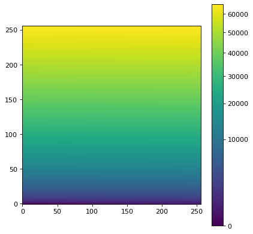

imshow_norm¶
-
astropy.visualization.mpl_normalize.imshow_norm(data, ax=None, **kwargs)[source]¶ A convenience function to call matplotlib’s
matplotlib.pyplot.imshowfunction, using anImageNormalizeobject as the normalization.- Parameters
- data2D or 3D array_like
The data to show. Can be whatever
imshowandImageNormalizeboth accept. Seeimshow.- ax
NoneorAxes, optional If None, use pyplot’s imshow. Otherwise, calls
imshowmethod of the supplied axes.- **kwargs
dict, optional All other keyword arguments are parsed first by the
ImageNormalizeinitializer, then toimshow.
- Returns
- result
tuple A tuple containing the
AxesImagegenerated byimshowas well as theImageNormalizeinstance.
- result
Notes
The
normmatplotlib keyword is not supported.Examples
import numpy as np import matplotlib.pyplot as plt from astropy.visualization import (imshow_norm, MinMaxInterval, SqrtStretch) # Generate and display a test image image = np.arange(65536).reshape((256, 256)) fig = plt.figure() ax = fig.add_subplot(1, 1, 1) im, norm = imshow_norm(image, ax, origin='lower', interval=MinMaxInterval(), stretch=SqrtStretch()) fig.colorbar(im)

{kind=link}
{kind=link}